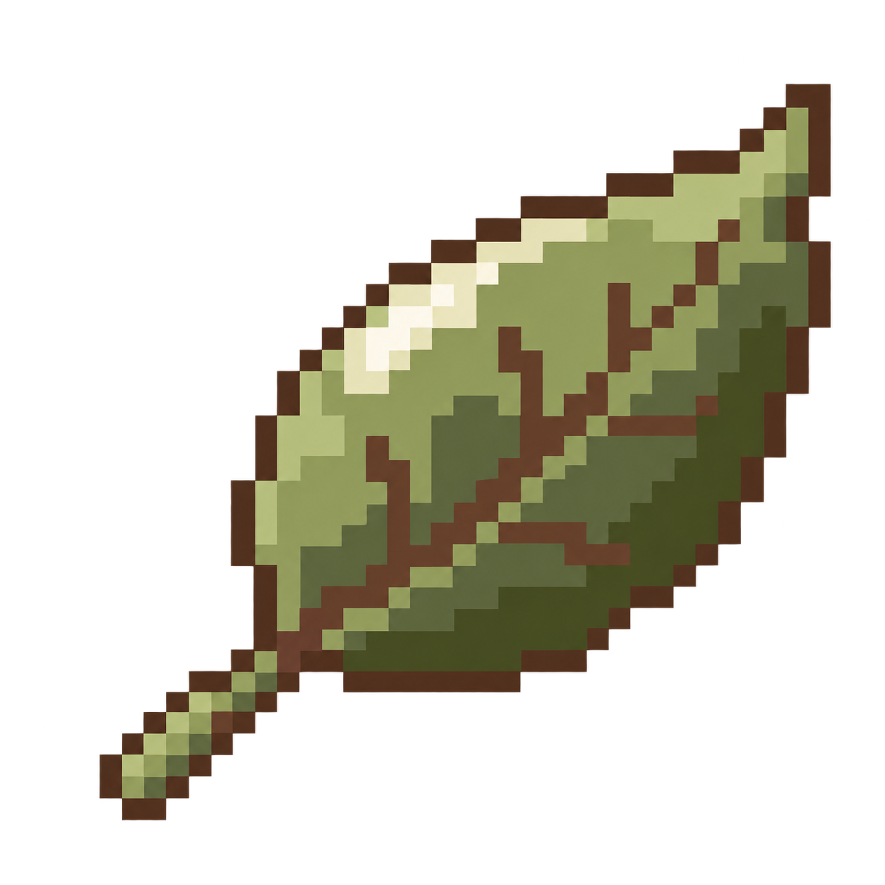

오늘도 좋은 하루예요!
오늘의 학습
학습 자료 3
아직 등록된 자료가 없어요
첫 학습 자료를 추가해 보세요.
시험
완료한 시험가 아직 없어요
작은 기록부터 차근차근 쌓아가요.
학습 통계
학습 기록 추이
기록 수 · 건10월 18일 – 10월 24일
학습복습
시험별 학습 비중
선택한 기간의 학습 기록 기준
3시험 / 독립
- 정보처리기사45%
- 토익35%
- 독립 자료20%
학습 캘린더
학습 기록이 있는 날짜를 선택해 내역을 확인하세요.
더보기
자료·학습 기록·시험은 이 브라우저에 저장됩니다. 통계는 예시이며 자동 복습 추천은 준비 중입니다.